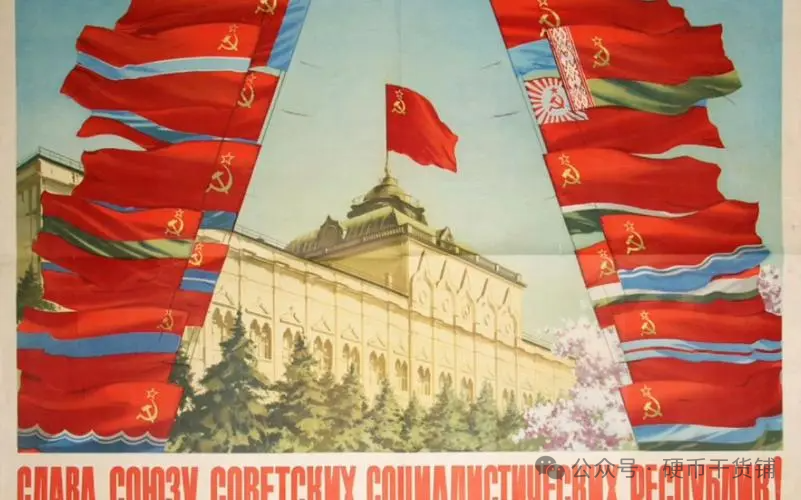
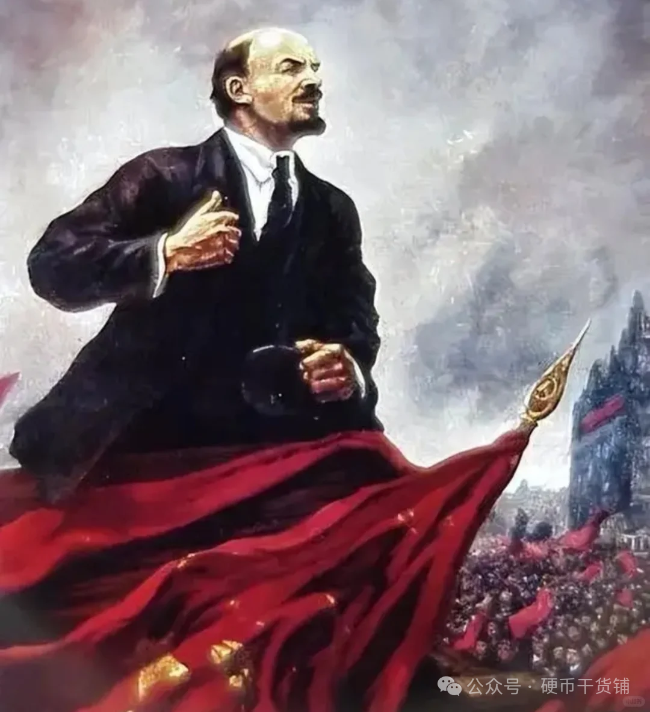
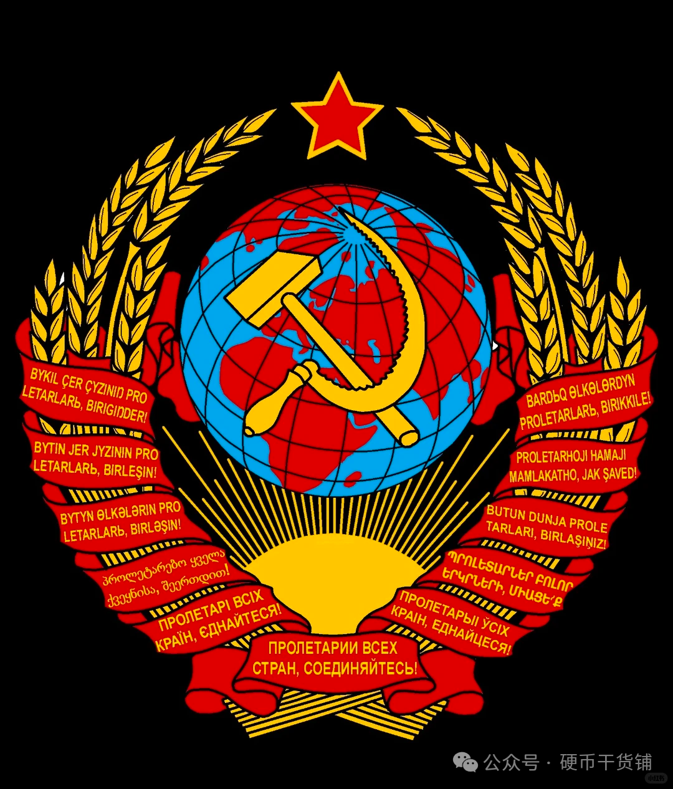
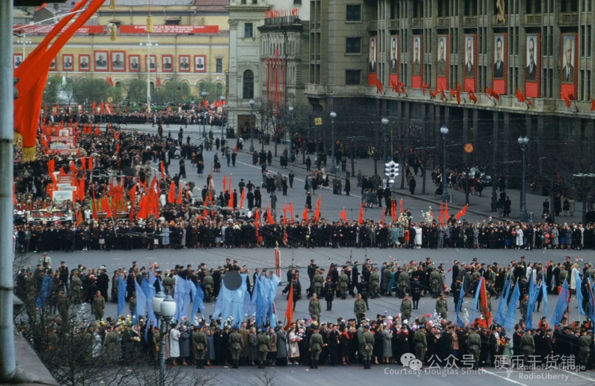
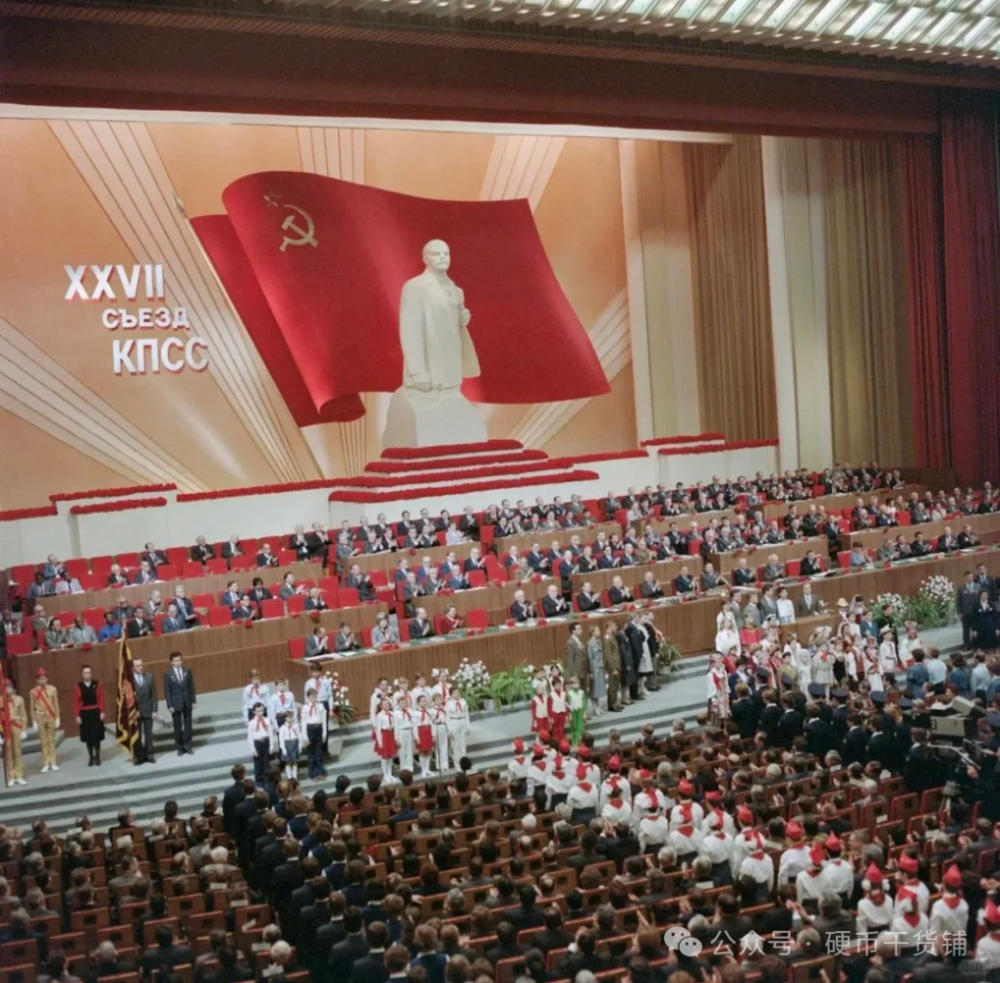

1922年：四个共和国为何抱团？揭秘苏联诞生背后的博弈与隐患
文字与图片版权归各自权利人所有。 查看公众号原文 ↗
1922年12月30日，莫斯科大剧院，灯火通明，气氛庄重而热烈。俄罗斯苏维埃联邦社会主义共和国、乌克兰苏维埃社会主义共和国、白俄罗斯苏维埃社会主义共和国、外高加索苏维埃社会主义联邦共和国的代表，齐聚在这里，召开了第一次全联盟苏维埃代表大会。

大会上，代表们一致通过了《苏维埃社会主义共和国联盟成立宣言》和《苏维埃社会主义共和国联盟宪法》，正式宣告“苏维埃社会主义共和国联盟”（简称“苏联”）的成立。这一天，一个全新的联盟国家，登上了世界历史的舞台；这一天，俄国的历史，乃至世界的历史，都迎来了一个新的转折点。
很多人都会有一个疑问：苏联，为什么是“联盟”，而不是“国家”？这四个苏维埃共和国，为什么会走到一起，组建一个统一的联盟国家？列宁的“民族自决”理念，与苏联的集权体制，又存在着怎样的矛盾与碰撞？
要回答这些问题，我们必须回到十月革命后的俄国，看看当时的民族格局与政治形势。
十月革命胜利后，苏维埃政权建立，但此时的俄国，并不是一个统一的国家，而是陷入了严重的民族分裂之中。沙皇俄国时期，是一个多民族的封建帝国，统治着几十个民族，沙皇政府推行民族压迫政策，欺压少数民族，导致各民族之间的矛盾非常尖锐。十月革命爆发后，沙皇的统治被推翻，民族压迫政策被废除，各少数民族纷纷要求民族独立，建立自己的苏维埃政权。

在这种形势下，列宁提出了“民族自决”的理念——主张各民族都有权利决定自己的命运，都有权利选择独立、自治，或者与其他民族联合，反对任何形式的民族压迫和民族歧视。列宁的这一理念，主要有两个目的：一是安抚各少数民族的情绪，化解各民族之间的矛盾，避免国家陷入彻底的分裂；二是团结各少数民族的力量，共同保卫新生的苏维埃政权，应对国内的白军叛乱和国外的帝国主义干涉。
在“民族自决”理念的指引下，俄国各地的少数民族，纷纷建立了自己的苏维埃政权。其中，俄罗斯苏维埃联邦社会主义共和国（简称“苏俄”）是最大、最强的一个，它占据了俄国的核心地区，掌握着最强大的力量；除此之外，乌克兰、白俄罗斯、外高加索（由格鲁吉亚、亚美尼亚、阿塞拜疆三个苏维埃共和国组成）等地区，也先后建立了自己的苏维埃共和国。

这些苏维埃共和国，虽然都是社会主义性质的政权，都信仰共产主义，都承认列宁和布尔什维克党的领导，但它们之间，依然存在着一定的矛盾和分歧，主要体现在经济、军事、外交等方面。同时，内战结束后，这些苏维埃共和国，都面临着经济崩溃、民生凋敝的困境，单独依靠自己的力量，很难恢复国民经济，很难应对复杂的国际形势。
因此，组建一个统一的联盟国家，联合各苏维埃共和国的力量，共同发展、共同防御，成为了当时的必然选择。一方面，通过联盟，能够集中各共和国的人力、物力、财力，加快国民经济的恢复和发展，改善民生；另一方面，通过联盟，能够团结各民族的力量，增强国家的实力，应对国外帝国主义国家的威胁，巩固苏维埃政权的统治。
但组建联盟国家，并不是一件容易的事情，其中，最大的分歧，来自于格鲁吉亚苏维埃共和国。格鲁吉亚方面，主张各苏维埃共和国之间，建立一个松散的联邦，各共和国拥有高度的自治权，甚至可以自由退出联盟；而列宁和苏俄方面，则主张建立一个统一的、集权的联盟国家，各共和国在联盟的统一领导下，开展各项工作，自治权受到一定的限制。
为了解决这一分歧，列宁亲自出面，与各苏维埃共和国的代表进行协商、谈判。列宁一方面坚持“民族自决”的理念，承认各苏维埃共和国的平等地位，允许各共和国拥有一定的自治权；另一方面，也强调联盟的统一性和集权性，主张联盟拥有统一的中央政府、统一的军队、统一的外交、统一的经济政策，确保联盟的稳定和强大。

经过反复的协商和谈判，各苏维埃共和国的代表，最终达成了一致意见，决定组建“苏维埃社会主义共和国联盟”，简称“苏联”。1922年12月30日，第一次全联盟苏维埃代表大会在莫斯科召开，大会通过了苏联成立的宣言和宪法，正式宣告苏联的成立。
根据苏联宪法的规定，苏联是一个联邦制的联盟国家，由各个苏维埃社会主义共和国自愿联合组成，各共和国拥有平等的地位，都有权利参与联盟的管理和决策；同时，各共和国也拥有一定的自治权，可以制定自己的宪法和法律，管理自己的内部事务，但必须服从联盟中央政府的统一领导，不得违反联盟的宪法和法律。
值得注意的是，苏联的“联盟”性质，与我们通常理解的“国家”，有着明显的区别。苏联的各个加盟共和国，并不是一个国家的“省”或“州”，而是拥有一定主权的实体，它们可以自由加入联盟，也可以自由退出联盟（这一规定，为后来苏联的解体，埋下了伏笔）；而联盟中央政府，虽然拥有统一的领导权，但它的权力，来自于各个加盟共和国的授予，必须尊重各个加盟共和国的意愿和利益。
苏联成立初期，共有四个加盟共和国：俄罗斯苏维埃联邦社会主义共和国、乌克兰苏维埃社会主义共和国、白俄罗斯苏维埃社会主义共和国、外高加索苏维埃社会主义联邦共和国。后来，随着形势的发展，越来越多的苏维埃共和国，加入到苏联的行列中来，最终，苏联发展成为一个拥有15个加盟共和国的超级大国。

苏联的成立，具有重大的历史意义。它结束了俄国长期的民族分裂局面，团结了各民族的力量，加快了国民经济的恢复和发展，巩固了苏维埃政权的统治；同时，它也开创了社会主义国家联盟的新模式，对世界社会主义运动的发展，产生了深远的影响。
但我们也必须看到，苏联的成立，并没有彻底解决民族矛盾，列宁的“民族自决”理念，与苏联的集权体制，依然存在着一定的矛盾和碰撞。各加盟共和国之间的分歧、民族之间的矛盾，并没有得到根本的化解，这些矛盾，在后来的历史发展中，不断积累、不断激化，最终，成为了苏联解体的重要原因之一。
下一期，我们走进列宁的晚年岁月：
苏联成立后，缔造者列宁的身体却日渐衰败。身处病榻之上，他留下的不只是一份遗嘱，更有对苏联未来的深深担忧。列宁晚年，为何会警惕斯大林？他对苏联的官僚化，又有怎样的警示？